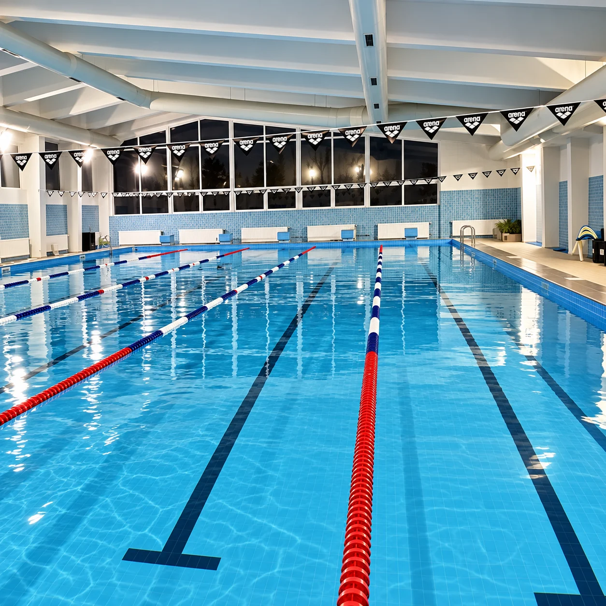
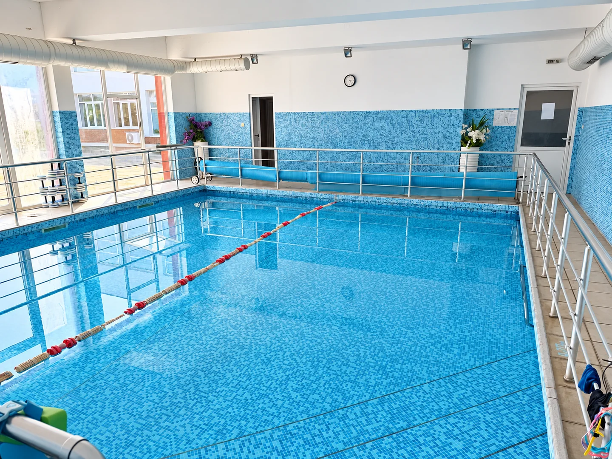
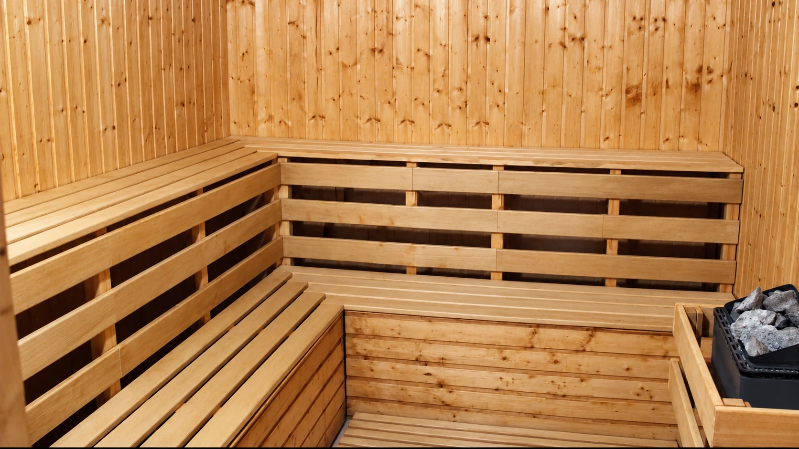
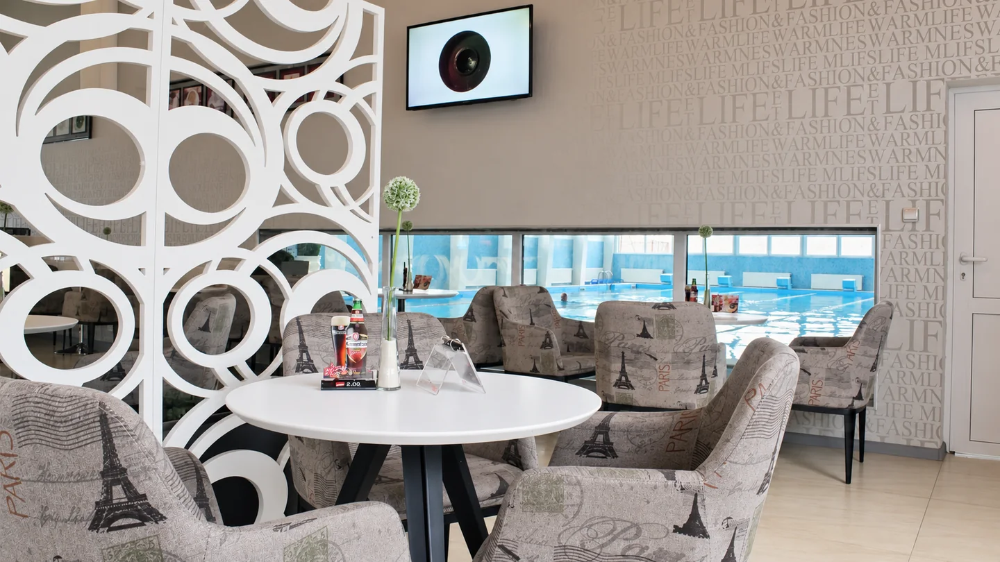

За комплекса
Плуване и отдих за деца и възрастни в Пловдив.
Спортен комплекс ВСИ в Пловдив предлага плуване и отдих за деца и възрастни. Разполагаме с полуолимпийски басейн за тренировки и свободно плуване, както и с малък басейн за първите стъпки във водата.
Полуолимпийски басейн

Полуолимпийският басейн разполага с 5 плувни коридора за тренировки, уроци и свободно плуване. В него се провеждат занимания за деца и възрастни.
С треньор можете да усвоите основните умения или да подобрите техниката си. Преди посещението разгледайте графика за подходящ час.
- Плувни коридори
- 5
- Дълбочина в началото
- 1,45 м
- Дълбочина в края
- 2,00 м
- Температура на водата
- 27 °C
Малък детски басейн

Малкият басейн е за първите стъпки на децата във водата. Под ръководството на инструктор малките плувци свикват с водата, изграждат увереност и усвояват основни умения. Басейнът има два коридора, разделени със стъпало — първият с дълбочина 0,70 м, вторият с 0,90 м.
След 6-годишна възраст децата могат да преминат и в големия басейн според готовността си.
- Плувни коридори
- 2
- Първи коридор
- 0,70 м
- Втори коридор
- 0,90 м
- Температура на водата
- 29 °C
Сауна

След плуването отделете време за себе си в сауната — за спокойна почивка и приятен завършек на посещението.
Можете да я ползвате самостоятелно или да комбинирате посещението с плуване.
За ползване на сауната е необходимо предварително обаждане на +359 877 014 663, за да уточните удобен час.
Кафене с изглед към басейна

След плуването се отбийте за кафе или освежаваща напитка. Освен напитки предлагаме и леко хапване. Настанете се удобно, отдъхнете и се насладете на малко време за себе си или на разговор с приятели.
С изглед към големия басейн кафенето е удобно място и за родителите, които искат да наблюдават урока на детето си при спазване на правилата на комплекса.
Още в комплекса
- Детски кътМясто за игра на открито за малките посетители.
- ПаркингКомплексът разполага с паркинг за посетители.